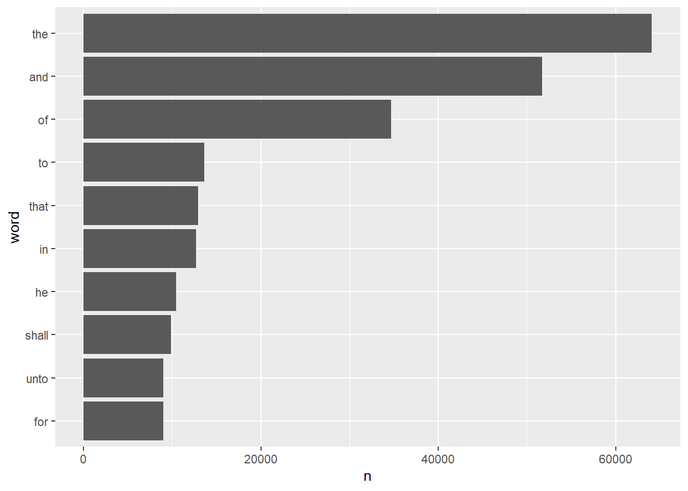

library(tidytext) #let's try tidytext for handling text data
library(ggplot2) #loading ggplot2 for making exploratory figures
library(gutenbergr) #access the bible from here
library(wordcloud2) #we'll see if we can make wordclouds
library(dplyr)
library(stringr)Data Exercise
In this exercise, I will be exploring text data using the Bible (King James Version). The gutenbergr package provides access to public domain works from the Project Gutenberg Collection. I’ll access the bible from this package, and explore the data using the R package tidytext. We’ll load a few more that will help us through this exercise.
Let’s check out how to load the bible from the gutenberg collection.
find <- gutenberg_works() |>
filter(title == "The King James Version of the Bible") #look for the book
find# A tibble: 1 × 8
gutenberg_id title author gutenberg_author_id language gutenberg_bookshelf
<int> <chr> <chr> <int> <fct> <chr>
1 10 The King… <NA> NA en Banned Books List …
# ℹ 2 more variables: rights <fct>, has_text <lgl>The KJV bible has the gutenberg_id 10. With that, we can download the book.
bible <- gutenberg_download(10)! The Project Gutenberg mirror list is currently unavailable at
<https://www.gutenberg.org/MIRRORS.ALL>.
ℹ This may be due to network issues or a change in the website structure.
Mirror list unavailable. Falling back to <https://aleph.pglaf.org>.Let’s take a quick look as to what this object looks like.
summary(bible) gutenberg_id text
Min. :10 Length:99553
1st Qu.:10 Class :character
Median :10 Mode :character
Mean :10
3rd Qu.:10
Max. :10 str(bible)tibble [99,553 × 2] (S3: tbl_df/tbl/data.frame)
$ gutenberg_id: int [1:99553] 10 10 10 10 10 10 10 10 10 10 ...
$ text : chr [1:99553] "The New Testament of the King James Bible" "The Gospel According to Saint Matthew" "The Gospel According to Saint Mark" "The Gospel According to Saint Luke" ...bible# A tibble: 99,553 × 2
gutenberg_id text
<int> <chr>
1 10 The New Testament of the King James Bible
2 10 The Gospel According to Saint Matthew
3 10 The Gospel According to Saint Mark
4 10 The Gospel According to Saint Luke
5 10 The Gospel According to Saint John
6 10 The Acts of the Apostles
7 10 The Epistle of Paul the Apostle to the Romans
8 10 The First Epistle of Paul the Apostle to the Corinthians
9 10 The Second Epistle of Paul the Apostle to the Corinthians
10 10 The Epistle of Paul the Apostle to the Galatians
# ℹ 99,543 more rowsIt looks like it’s a big chunk of text, as expected.It seems to have two columns: gutenberg_id (which is just 10) and text. The text appears to be individual lines. If that’s the case, we then have 99,553 lines of text.
The first thing we can do is transform the data into the tidy text format using the tidytext package.
bible_tidy <- bible |>
unnest_tokens(word, text)This breaks down the object into individual words.
bible_tidy# A tibble: 852,462 × 2
gutenberg_id word
<int> <chr>
1 10 the
2 10 new
3 10 testament
4 10 of
5 10 the
6 10 king
7 10 james
8 10 bible
9 10 the
10 10 gospel
# ℹ 852,452 more rowsAnd if our new object is broken into individual words, it looks like there’s 852,462 words in this bible. Now that we have this text format, we can quickly look at the most commonly used words in the KJV bible.
word_count <- bible_tidy |>
count(word, sort=TRUE)
bible_tidy |>
count(word, sort=TRUE) |>
filter(n > 8970) |>
mutate(word = reorder(word,n)) |>
ggplot(aes(n,word)) +
geom_col()
I can’t say I’m too surprised but these are honestly pretty boring words. Fortunately, we can remove boring words (called stop words in the package) so that we can take a look at more interesting words.
bible_interesting <- bible_tidy |>
anti_join(get_stopwords())Joining with `by = join_by(word)`word_count2 <- bible_interesting |>
count(word, sort=TRUE)
word_count2# A tibble: 12,829 × 2
word n
<chr> <int>
1 shall 9838
2 unto 8997
3 lord 7830
4 thou 5474
5 thy 4600
6 god 4446
7 said 3999
8 ye 3983
9 thee 3827
10 1 2783
# ℹ 12,819 more rowsNow those seem more like bible words. Let’s make a wordcloud of these as well using the wordcloud2 package. It’s even interactive where you can hover your mouse cursor on the word to tell you how many instances they’ve been used in the KJV bible.
wordcloud2(word_count2, color = "random-light", backgroundColor = "white")Interestingly, we can also take a look at two-word combinations called bigrams. Let’s see if those are any more interesting than the most common words list.
bible_bigrams <- bible |>
unnest_tokens(bigram, text, token = "ngrams", n = 2) |>
filter(!is.na(bigram))
bible_bigrams# A tibble: 777,790 × 2
gutenberg_id bigram
<int> <chr>
1 10 the new
2 10 new testament
3 10 testament of
4 10 of the
5 10 the king
6 10 king james
7 10 james bible
8 10 the gospel
9 10 gospel according
10 10 according to
# ℹ 777,780 more rowsbible_bigrams |>
count(bigram, sort = TRUE)# A tibble: 155,621 × 2
bigram n
<chr> <int>
1 of the 10955
2 the lord 6487
3 and the 6037
4 in the 4783
5 and he 2716
6 shall be 2375
7 to the 2054
8 all the 2036
9 and they 1968
10 unto the 1932
# ℹ 155,611 more rowsbible_bigrams |>
count(bigram, sort=TRUE) |>
filter(n > 1931) |>
mutate(bigram = reorder(bigram,n)) |>
ggplot(aes(n,bigram)) +
geom_col()
Unfortunately, these bigrams aren’t necessarily any more exciting than their solitary counterparts. Let’s see one last statistic before we proceed to deeper analysis. Let’s do a simple letter count.
bible_letters <- bible |>
unnest_tokens(letter, text, token = "characters")
letters <- bible_letters|>
count(letter, sort=TRUE)
ggplot(letters, aes(reorder(letter,n), y = n))+
geom_col()+
coord_flip()+
labs(x = "Letter", y = "Frequency")
Moving on, one cool thing about text analysis is something called sentiment analysis (or opinion mining). There are databases of words with certain associations like how words feel. For example, we can categorize words in the bible based on if they’re positive or negative.
bible_bing <- bible_tidy |>
inner_join(get_sentiments("bing")) |>
count(word, sentiment, sort=TRUE) |>
ungroup()Joining with `by = join_by(word)`Warning in inner_join(bible_tidy, get_sentiments("bing")): Detected an unexpected many-to-many relationship between `x` and `y`.
ℹ Row 417712 of `x` matches multiple rows in `y`.
ℹ Row 5210 of `y` matches multiple rows in `x`.
ℹ If a many-to-many relationship is expected, set `relationship =
"many-to-many"` to silence this warning.bible_bing# A tibble: 1,341 × 3
word sentiment n
<chr> <chr> <int>
1 great positive 962
2 good positive 720
3 like positive 669
4 evil negative 613
5 holy positive 611
6 heaven positive 582
7 sin negative 447
8 peace positive 429
9 work positive 419
10 gold positive 417
# ℹ 1,331 more rowsNow those are awesome bible words. Let’s see the top positive and negative words on graphs.
bible_bing %>%
group_by(sentiment) %>%
slice_max(n, n = 10) %>%
ungroup() %>%
mutate(word = reorder(word, n)) %>%
ggplot(aes(n, word, fill = sentiment)) +
geom_col(show.legend = FALSE) +
facet_wrap(~sentiment, scales = "free_y") +
labs(x = "Contribution to sentiment",
y = NULL)
Overall, this was a pretty good exercise in learning about tools for text analysis. I haven’t done, or thought about this, before - so I’m curious what kind of fields heavily rely on these types of analyses.